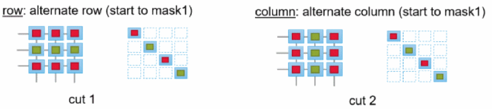

viaCutColorPatterns
we viaCutColorPatterns string "patternName"
Description
Defines a cut coloring pattern to be used for layer transition. Using this environment variable, you can specify the list of cut layer names. The cut layer uses a basic color pattern: alternate row, column, chessboard, and uniform. If no coloring pattern is defined for a cut layer, by default the uniform color pattern is considered.
For example, to define the coloring pattern for a cut layer you could use the following:
envSetVal ("we" "weViaCutColorPatterns" 'string "(cut1 row) (cut2 column)")
The pattern defined in the above example specifies that for cut1 layer apply alternate row and for cut2 layer apply alternate column.

GUI Equivalent
Examples
envGetVal("we" "viaCutColorPatterns")
envSetVal("we" "viaCutColorPatterns " 'string "(cut1LayerName col) (cut2LayerName row)")
Related Topics
Variables to Customize the Interactive and Assisted Routing Settings
Return to top